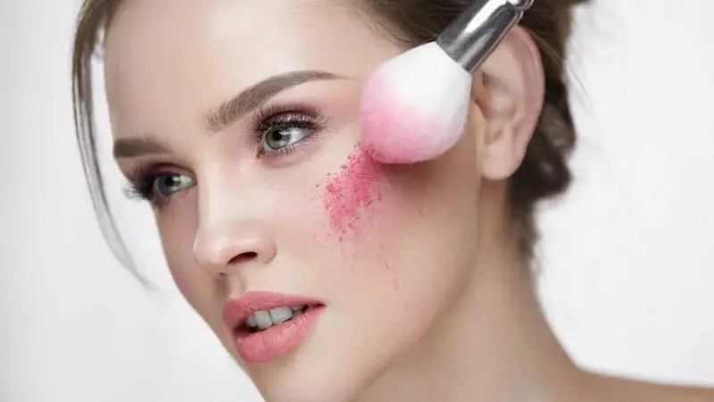

Хайлайтеры и румяна: как выбрать и правильно наносить
Хайлайтеры и румяна помогают сделать макияж лица более свежим, выразительным и естественным. Правильно подобранные оттенки подчеркивают скулы, придают коже здоровое сияние и создают гармоничный образ как для дневного, так и для вечернего макияжа.
Консультации / Записаться

Популярные разделы о хайлайтерах и румянах
Типы хайлайтеров и румян
Сухие, кремовые и жидкие текстуры и их особенности.
Как выбрать оттенок
Подбор оттенка под тон кожи и стиль макияжа.
Техника нанесения
Где наносить румяна и хайлайтер для естественного эффекта.
Лучшие средства
Популярные хайлайтеры и румяна разных брендов.
Инструменты для макияжа
Кисти и аксессуары для нанесения и растушёвки.
Советы визажистов
Как сделать макияж свежим и сияющим.


Типы хайлайтеров и румян
Современные хайлайтеры и румяна представлены в разных текстурах, каждая из которых подходит для определённого типа кожи и техники макияжа. Выбор правильного формата помогает добиться более естественного и стойкого результата.
Для естественного макияжа визажисты часто комбинируют разные текстуры: например, кремовые румяна для свежести и сухой хайлайтер для мягкого сияния скул.


Техника нанесения хайлайтера и румян
Правильная техника нанесения помогает подчеркнуть естественные черты лица, добавить коже свежесть и сияние. Визажисты рекомендуют наносить румяна и хайлайтер в определённых зонах, чтобы создать гармоничный и естественный макияж.
Чтобы макияж выглядел максимально естественно, важно тщательно растушёвывать продукты и использовать мягкие кисти для лица.
Нужен профессиональный макияж?
Если вы хотите подобрать идеальный тон или сделать профессиональный макияж, обратитесь к опытному визажисту.
Посмотреть услуги визажиста

Советы визажистов по использованию хайлайтера и румян
Профессиональные визажисты используют хайлайтеры и румяна для создания свежего, сияющего и гармоничного макияжа лица. Несколько простых рекомендаций помогут сделать макияж более естественным и подчеркнуть достоинства внешности.
Правильное сочетание оттенков, текстур и техники нанесения помогает создать свежий и сияющий макияж, который подходит как для повседневного образа, так и для вечернего макияжа.


Как выбрать оттенок хайлайтера и румян
Правильно подобранный оттенок хайлайтера и румян помогает подчеркнуть естественную красоту кожи и сделать макияж более гармоничным. При выборе важно учитывать тон кожи, подтон и желаемый эффект макияжа.
Если вы сомневаетесь в выборе, визажисты советуют начинать с универсальных персиковых или розовых оттенков румян и хайлайтера цвета шампанского — они подходят большинству типов кожи.
Инструменты для нанесения хайлайтера и румян
Правильно подобранные инструменты помогают равномерно распределить продукт и добиться естественного результата. Визажисты используют разные кисти и аксессуары в зависимости от текстуры румян или хайлайтера.
Для лучшего результата важно регулярно очищать кисти и спонжи. Чистые инструменты помогают избежать раздражения кожи и обеспечивают более аккуратное нанесение косметики.
Лучшие хайлайтеры и румяна
Подборка популярных хайлайтеров и румян для сияющего и естественного макияжа. Здесь представлены бюджетные и профессиональные варианты, которые используют визажисты и бьюти-блогеры.

Бюджетный хайлайтер с ярким сиянием

Запечённая текстура для естественного сияния

Нежный розово-золотой хайлайтер

Жидкий хайлайтер для эффекта glow skin

Интенсивное сияние для профессионального макияжа

Лёгкий жидкий хайлайтер, можно смешивать с тональным

Румяна с хорошей пигментацией и доступной ценой
Бюджетные румяна с мягкой текстурой

Лёгкие румяна с натуральным эффектом

Насыщенные румяна с высокой стойкостью

Кремовые румяна-стик для естественного макияжа

Жидкие румяна с эффектом сияющей кожи
Частые ошибки при использовании хайлайтера и румян
Даже качественные хайлайтеры и румяна могут выглядеть неестественно, если наносить их неправильно. Ниже — самые распространённые ошибки, которые часто допускают при создании макияжа.
Слишком много хайлайтера
Избыточное количество средства делает кожу слишком блестящей и подчеркивает текстуру. Лучше наносить хайлайтер тонким слоем и постепенно усиливать сияние.
Неправильная зона нанесения румян
Румяна, нанесённые слишком низко или близко к носу, могут изменить пропорции лица. Чаще всего их наносят на яблочки щёк и мягко растушёвывают в сторону висков.
Неподходящий оттенок
Слишком холодные или слишком тёплые оттенки могут выглядеть неестественно на коже. Лучше выбирать цвет румян и хайлайтера, ориентируясь на тон кожи и общий стиль макияжа.
Плохая растушёвка
Чёткие линии и пятна на лице появляются, если средство плохо растушевано. Используйте мягкие кисти или спонжи для создания плавного перехода между оттенками.
Использование неподходящих инструментов
Для разных текстур лучше использовать разные инструменты. Пудровые продукты удобнее наносить кистью, а кремовые — спонжем или пальцами.
Часто задаваемые вопросы о хайлайтерах и румянах
Как выбрать оттенок хайлайтера?
Выбирайте оттенок в зависимости от тона кожи: светлые для светлой кожи, золотистые для тёплых тонов, персиковые для смуглой кожи.
Как выбрать оттенок румян?
Определите цвет по натуральному румянцу или желаемому эффекту: розовые — для свежего вида, персиковые — для тепла, коралловые — для загорелой кожи.
Нужно ли использовать кисть для нанесения?
Да, кисть или спонж позволяет растушевывать средство равномерно и избегать пятен.
Можно ли сочетать кремовые и пудровые текстуры?
Да, но наносите сначала кремовые продукты, потом закрепляйте пудровыми, тщательно растушёвывая границы.
Как сделать макияж более стойким?
Используйте базу под макияж или лёгкую пудру перед нанесением румян и хайлайтера, чтобы продлить стойкость.